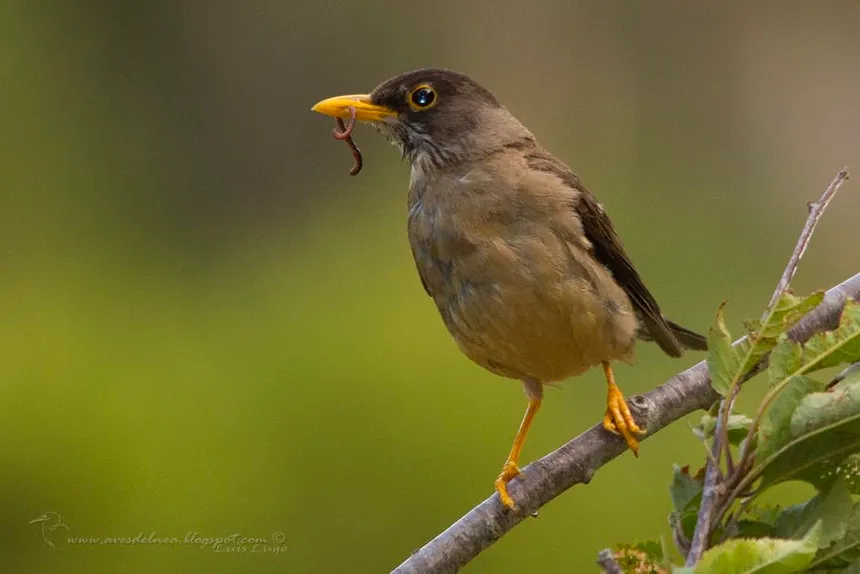
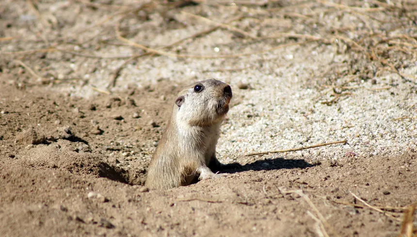

Aguilucho
El aguilucho común o aguilucho ñanco (Geranoaetus polyosoma), también llamado busardo dorsirrojo, águila parda, águila de pecho blanco o pihuel, es una especie de ave accipitriforme de la familia Accipitridae.
Mide entre 45 y 62 cm de largo, mientras que su envergadura oscila entre los 113 y los 151 cm.
Condór Andino
El cóndor andino (Vultur gryphus), también conocido como cóndor de los Andes o simplemente cóndor, es una especie de ave de la familia Cathartidae, que habita en la cordillera de los Andes y las costas adyacentes del océano Pacífico en el oeste de América del Sur.
Gato Huiña

La huiña, güiña, gato de campo o gato colorado (Leopardus guigna) es un felino endémico de la región Pacífico del continente sudamericano. Vive principalmente en el centro y sur de Chile, así como marginalmente en áreas adyacentes de Argentina.
Huemul
l huemul (del mapudungun wümul) o ciervo sur andino (Hippocamelus bisulcus), es un mamífero en peligro de extinción perteneciente a la familia Cervidae que habita en la cordillera de los Andes en los bosques andino patagónicos.
Zorzal
El zorzal patagónico, zorzal (Turdus falcklandii) o huilque, es una especie de ave paseriforme de la familia Turdidae.
Mide alrededor de 29 centímetros. Su cabeza es negra mientras que su cola es gris, con plumas blancas en la parte del vientre. Sus patas son de color amarillo o anaranjado y su pico algo más claro. Habita en campos, praderas, jardines, plazas y parques de las ciudades.
Tuco Tuco
Ctenomys es un género de roedores histricomorfos, el único de la familia Ctenomyidae, comocidos vulgarmente como tucutucos, tucu tucu o tuco tucos. Incluye más de sesenta especies.
Son de hábitos subterráneos, cavan madrigueras en el suelo y viven dentro de ellas, saliendo al exterior por breves períodos para cortar vegetales y llevarlos a la cueva, donde se alimentan.
Pudú
Pudu es un género monotípico de cérvidos nativos de la región andina de América del Sur, conocidos comúnmente como pudúes o también venados, por su semejanza con otros cérvidos que llevan ese nombre. Se trata de los miembros más pequeños de la familia de los cérvidos.
Pitío
El pitío, pitigüe o carpintero pitío (Colaptes pitius), es una especie de ave Piciforme perteneciente al género Colaptes. El nombre "pitío" se deriva de su nombre mapuche pütiw, que a su vez es una onomatopeya de su canto.
Habita Chile y Argentina. Se le encuentra normalmente desde la zona costera hasta la precordillera, a unos 2.000 m s. n. m., en los faldeos de cerros y en campos abiertos arbustivos, evitando los bosques y selvas, en los cuales se le puede ver a la orilla de estos.